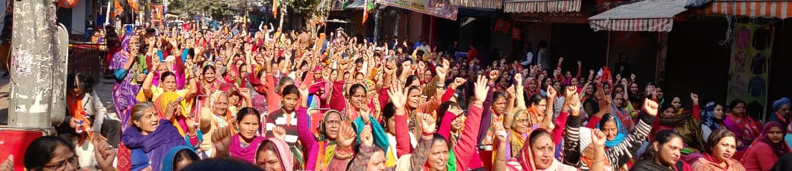
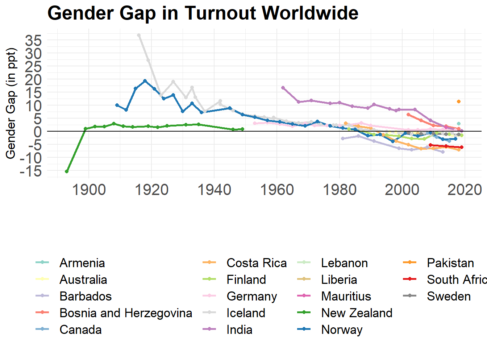

Research

Working Papers
The Gender Turnout Gap Revisited: When Do Women Participate (Un)Equally in the Electoral Process?
When do women turnout at equal rates to men? Political scientists have paid little attention to this problem since the gender turnout gap – the difference between male and female turnout rates – closed in the US in the 1980s. However, the question is far from answered. Using a new time-series dataset on India, where the gender turnout gap recently closed, I show that traditional theories of female electoral participation hold little explanatory power: relatively higher female turnout rates are not correlated with (1) higher levels of development; (2) higher female labor force participation rates; or (3) female representation. Instead, I propose a theory of social norms, where conservative social gender norms act as additional, gender-specific costs of voting that depress women’s turnout but not men’s. When social gender norms become more compatible with women’s electoral participation, female turnout will catch up with – and sometimes exceed – male turnout. Importantly, this norm change need not be dependent on economic factors, such as growth or female labor force participation. Instead, I show that under certain conditions, women’s political participation can precede their economic participation.

Administering Democracy: On the Quality of Voter Lists and Popular Political Participation in India
Voter roll quality is a major factor in determining both turnout and democratic legitimacy in a country. While under-enrollment and the extent of “deadwood” on voter lists have come under considerable scrutiny in the United States, the accuracy of electoral rolls in developing countries has not attracted the same scholarly attention so far. That is despite the fact that faulty lists hinder the electoral process, disenfranchise eligible individuals and distort official turnout statistics. Using original data from two full village censuses and a large-scale household survey, I examine the quality of the electoral roll in India’s largest state, Uttar Pradesh. I show that voter lists are considerably inflated in Uttar Pradesh; that electoral rolls include more obsolete records of females than males; and that actual participation rates far exceed official accounts. The reason for the inflation of voter lists, I argue, lies in the incentive structure for low-level officers in charge of maintaining the decentralized rolls.
Ethnic Identity Salience and Attitudes Toward Women
Are political attitudes affected by which of their multiple ethnic identities is most salient for a person? If each ethnic identity comes with certain social norms that are practiced and enforced by an ethnic group, then making one identity salient over another should restrict the choice space of acceptable behavior and attitudes accordingly. I test this theory using particularly meaningful attitudes: men’s attitudes toward women’s political and economic participation, which have been shown to affect women’s labor force participation and partaking in the political process around the world. Using an original online survey experiment in India, I show that it indeed matters which ethnic identity is most salient for a man. Males who were primed on their religious identity showed less support for women’s political and economic participation than those in the control group. The results were less clear-cut for the treatment that primed men on their caste identity: while males self-identifying as Brahmins, members of other forward castes or Dalits increased their support for women’s participation when treated, men who belong to the Other Backward Classes (OBC) lowered their support when treated.
Economic Performance and Ethnic Party Success – Evidence from India
Do economic conditions affect ethnic parties’ electoral fortunes? Using insights from research on ethnic parties, ethnic mobilization and economic voting, this paper suggests they do. In a patronage democracy like in India in particular, where people are dependent on the state for essential goods and services, this dependency can be expected to change with shifts in economic performance. And while economic shocks have been shown to often incite violence, research also suggests that sometimes, voting for ethnic parties can be a substitute for ethnic violence (or follow ethnic violence) in order to gain access to the state. I test this economic theory of ethnic voting using district-level data from across Indian states. A regression analysis shows a strong negative correlation between economic growth and the vote share captured by ethnic parties. An IV analysis using rainfall as an instrument for economic growth provides first evidence that this relationship might be causal.
Work in Progress
When Enrolling Is the Bigger Hurdle: Descriptive Findings on Women’s Disenfranchisement in India
India is often touted as “the world’s largest democracy” and has witnessed a significant rise in popular political participation over the past 20 years. However, these turnout rates are calculated using the number of registered electors. Because voter registration is active in India, adults who do not enroll are de facto disenfranchised. Using original survey data from two complete village censuses in Uttar Pradesh, I show that women are much more likely than men to be excluded from the electoral roll; and that the factually disenfranchised tend to be in their 20s and 30s. Contrary to expectations, though, religious and caste identity do not predict registration status; nor do education or household income. Building on qualitative field work and a large-scale survey in Uttar Pradesh, I lay out how voter list inflation–the inclusion of non-existent voters in the electoral roll–systematically hides women’s disenfranchisement in official statistics.

The Challenge of Measuring the Gender Turnout Gap
Studies of women’s electoral participation face a major data constraint: very few countries collect and publish gender-disaggregated turnout data. Accordingly, previous scholarship mostly relied on survey data to gauge women’s electoral participation relative to men’s, despite the fact that survey respondents notoriously over-report having voted and we know nothing about whether this behavior is gendered. I explore this potential source of error by comparing a new dataset of administrative turnout data disaggregated by gender and survey-based estimates of turnout among men and women for about two dozen countries worldwide. I find that men overreport their turnout at even higher rates than women, obfuscating the gender turnout gap, that is, the difference between male and female turnout rates. This finding has important implications for scholars studying electoral participation, as survey results can either hide or exaggerate actual gender differences in turnout.